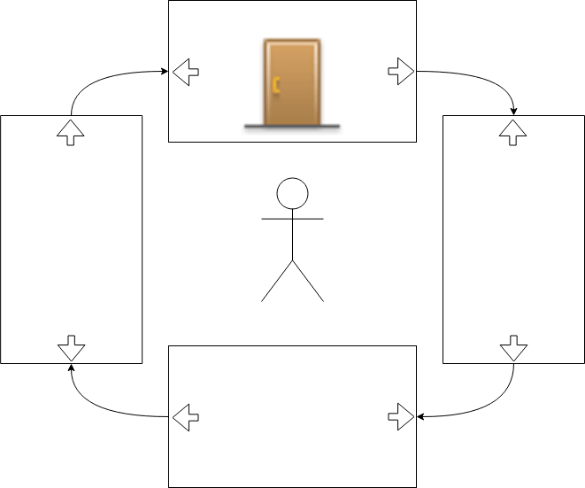
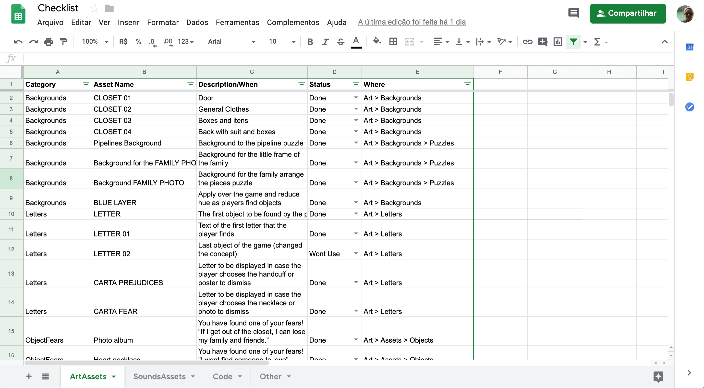
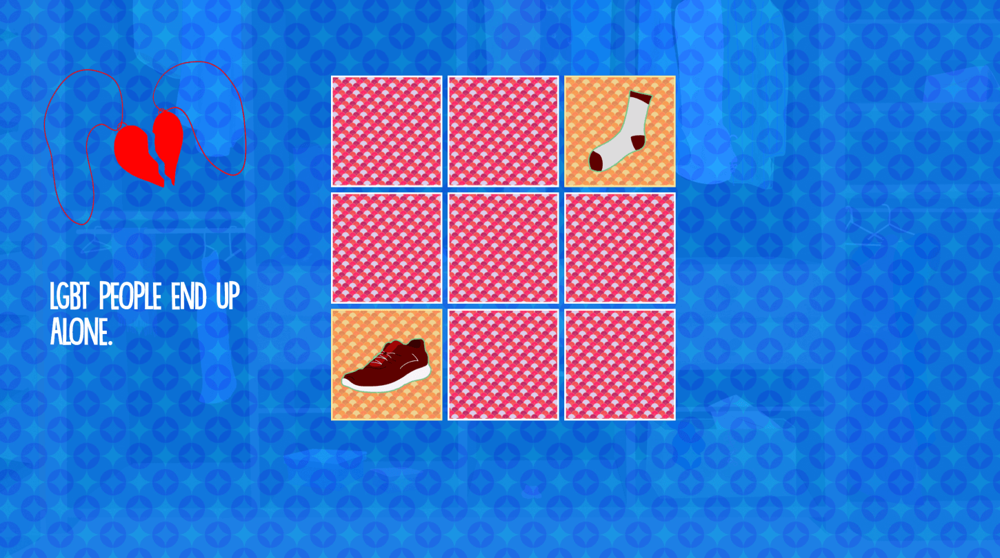
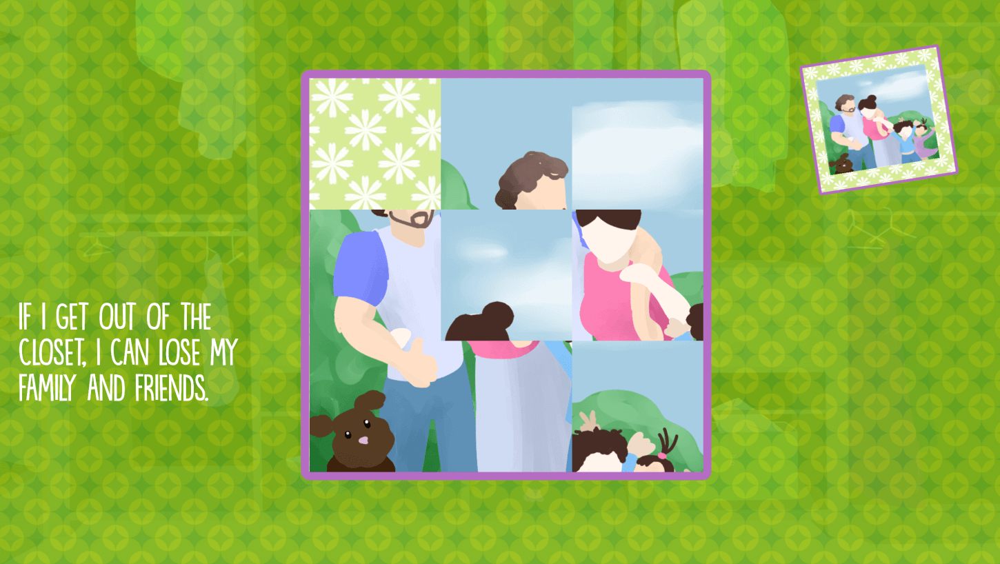
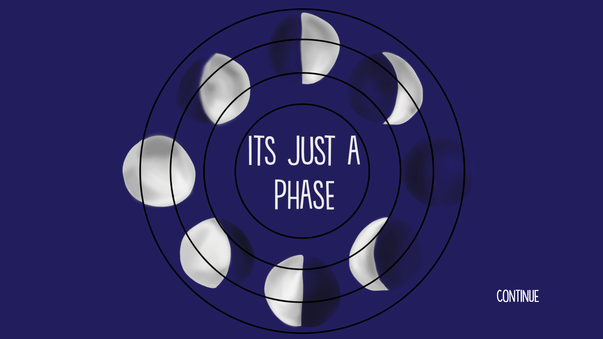
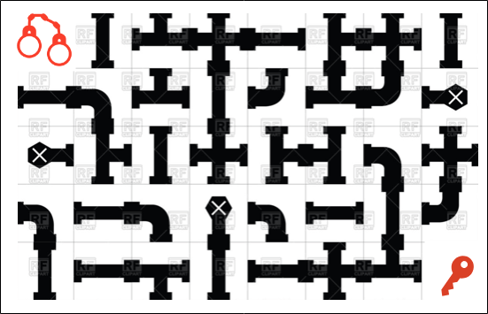
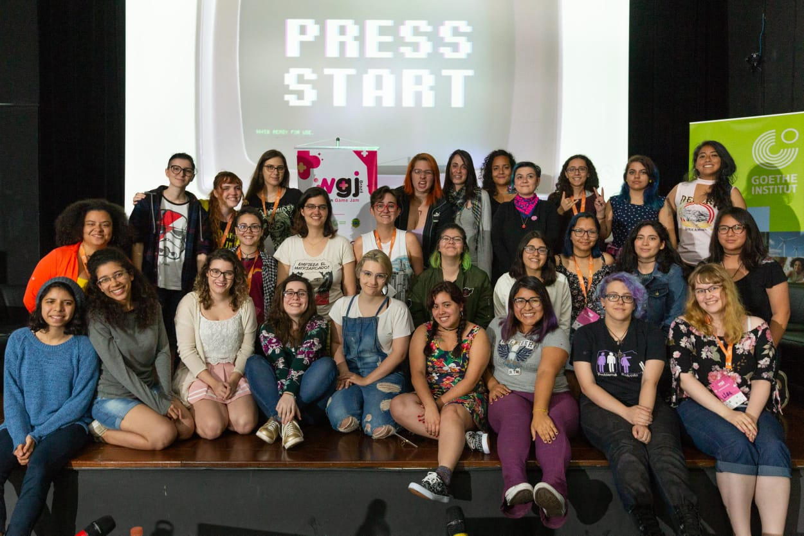

CONTEXT
Coming Out Simulator is a game developed at Women Game Jam Brazil. I worked as a game producer, game designer and helped with some of the programming during the creation of the game.
PROCESS
At WGJBR-São Paulo there were some international visitors. They were girls from all over Latin America for an event called Girl Games. Some of them presented pitches and invited whoever wanted to work with them to do so. I decided I wanted to take the challenge and worked on a group with an artist from Argentina and a programmer from Salvador.
The theme of the Jam was "LOSE TO WIN" and her idea was a Coming Out Simulator. The main challenge was adapting everything to work together and to transmit the experience of coming out of the closet. Which is a quite difficult and sometimes hurtful experience, but that can show you new comforts.
We started brainstorming how we wanted our game to be and how we would connect everything. That’s when I had the insight of losing fears and prejudices to win who you are. Because in the end, getting out of the closet is all about overcoming your fears and other people prejudices so that you will be able to be who you are. It is also about understanding that you can find little comforts everywhere.
First, we thought about making a closet where you had to find objects and read what the fear/prejudice/comfort about them was. Then we realized this was too easy and wouldn’t translate the experience and toughness of the task at hand correctly.
We listed a bunch of prejudices we knew people had, also many fears that we had faced. We chose to do some puzzles, two fears, and two prejudices. I knew what we wanted to was bold in terms of scope, so I tried to keep everything as organized as possible so that everyone could accomplish their tasks easily. We listed all the assets that would be necessary for each puzzle and I decided to approach a new method of organizing tasks, I used a spreadsheet with tabs for each role at the game:
At first, we were going to do two simple puzzles. It was going to be a mechanic for fear and another for prejudice, but we decided we wanted to diversify and level up a bit. Doing four different mechanics:
We decided to use a two piece necklace to translate the fear that LGBTQ+ people end up alone and we used a memory puzzle to show that you don’t need to find an exact match. The match to a shoe is a sock. To a discman is an earphone and that people already have full hearts.
We used an album to translate the fear that LGBTQ+ people might lose their family and friends when getting out. We used a sliding puzzle for that, because things might not always fit and might be messy, but after moving the pieces around you will get comfortable again and if needed find new friends.
We used a circular puzzle to talk about the prejudice that being an LGBTQ+ is just a phase and it will pass. We choose to use the moon because it has many phases, but it always comes back to the same place and form.
The last prejudice we decided to address was the one that all LGBTQ+ are promiscuous. We used a fluffy handcuff for it and planned on doing a pipe puzzle into the key. The idea behind it was that you could find your way out and accept yourself and sexual preferences by exploring the ways around. We couldn't implement it on time for the jam.
Apart from those objects that represented the fears and prejudices the player had to overcome we also added a bunch of objects that represented comforts to help the player understand that even though things were difficult there were also good things to be discovered outside the closet. The game can only be completed by finding all the objects and getting comfortable with who you are. We developed two different endings that might appear depending on the players last choice to open the door to the world.
Final Outcome
After the Jam I and my team decided to do an intro to the game and translate it to our mother languages and not only English because we were really proud of what we had accomplished and we wanted to turn the game accessible for as many people as possible. Now Coming Out Simulator can be played in English, Portuguese and Spanish.
